Chão da base, um só e sutil
- Um chão só. As 4 variações de antes (lisa, emendada, grelha, tampa) viraram a mesma chapa: os 4 arquivos continuam (o jogo sorteia entre eles), mas a única diferença são 3–4 pintinhas de desgaste de 1 tom, que só servem pra repetição não marcar padrão.
- Cor da referência: cinza-azulado puxando pro verde (aço), no lugar do lilás de antes. Tudo em 4 tons a ±1–2 degraus da chapa.
- Junta fina e discreta: 1 px de junta, sombra de 1 px na borda de baixo/direita, fio de luz de 1 px na borda de cima/esquerda. Saíram os rebites dos cantos, o chanfro claro e o contraste forte.
- Pino em losango no cruzamento das juntas (da referência): cada tile desenha 1/4 dele, 4 tiles montam o losango 4×4.
- Ícone do menu (
icon_base_floor.png) refeito: 4 chapas novas com a junta em cruz e o pino no meio. - A porta nas cenas é a de hoje no
assets/(a redesenhada do v05_m3_porta); no "depois" ela foi regerada com o chão novo por baixo.
5 arquivos · tamanhos conferidoscores no chão: 9 antes → 8 depois0 desvios do contratopendentes, nada no assets/
Antes × depois em cena
A base do M2 (paredes, porta solo embaixo e na direita, Dispersor, bancada, baú, O₂ nv.1, luminária, painel fora) com o player na porta. Montada só com os sprites, na ordem do jogo. Ampliado ×2. O chão da base não recolore por estágio (o jogo usa o mesmo PNG nos 4); o que muda é o terreno em volta.
Tempestade
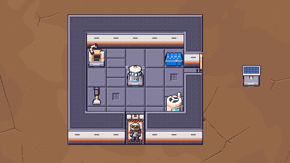
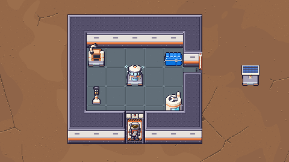
Árido
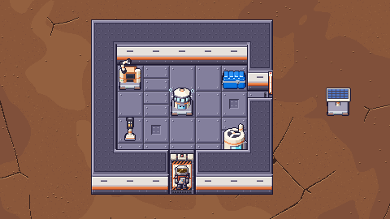
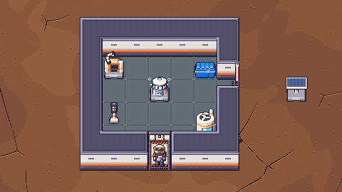
Névoa
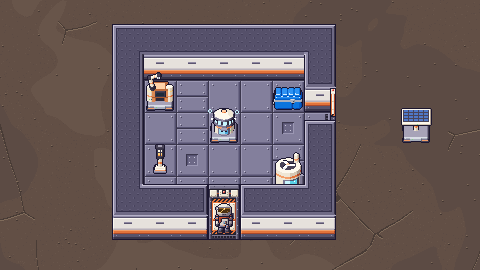
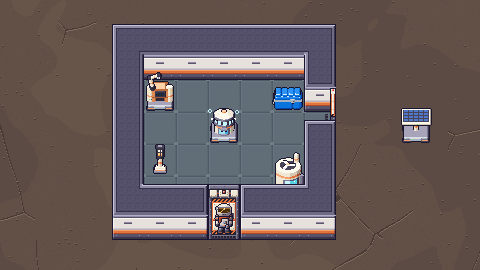
Verde
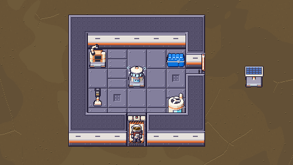
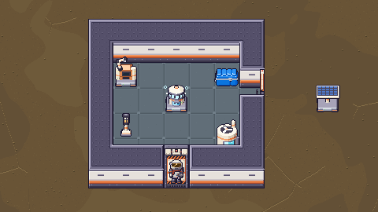
Recorte ×3 (Árido)
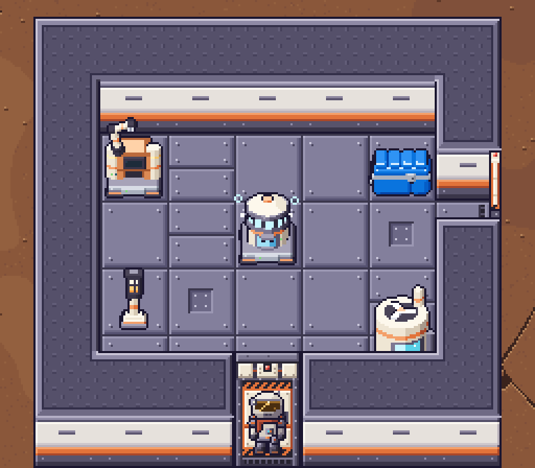
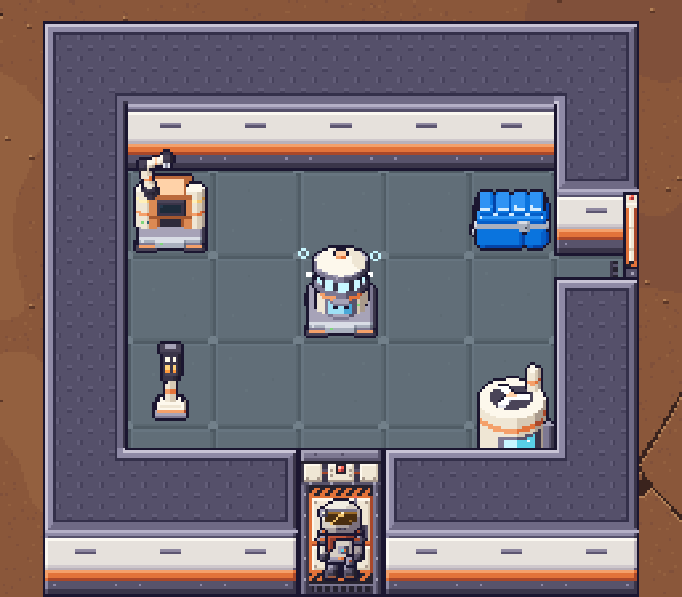
Escala real (1:1), os 4 estágios, depois
Área grande (repetição)
24×12 tiles de chão em 960×540, 1:1, como fica na tela. Antes e depois alternando sozinhos a cada 2 s.
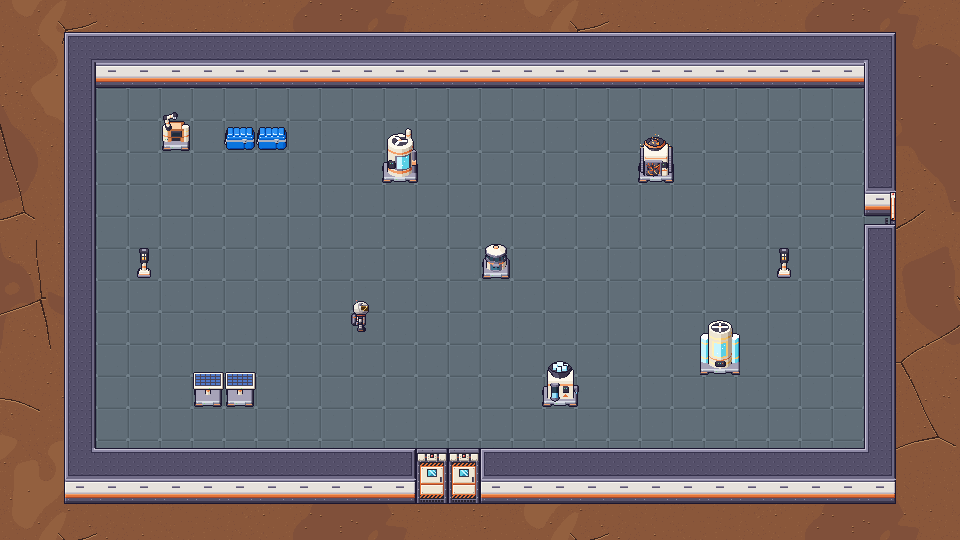
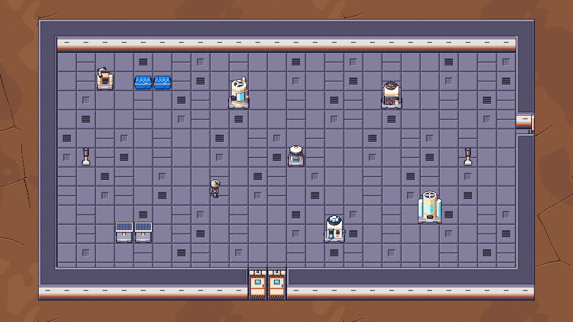
Vazia (só o chão), Névoa
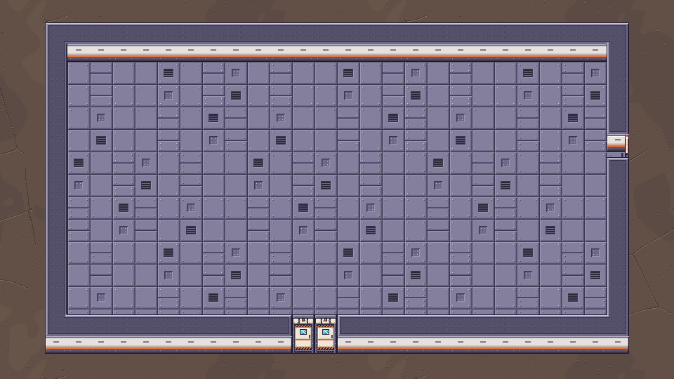
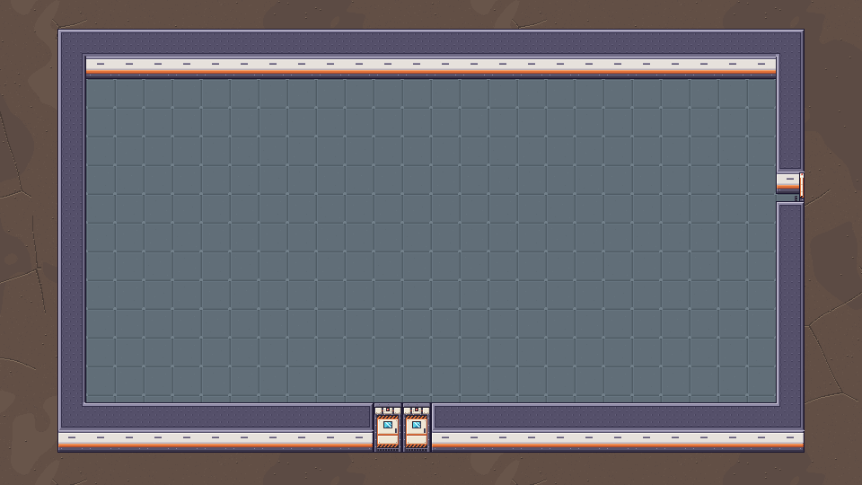
Os outros estágios, depois
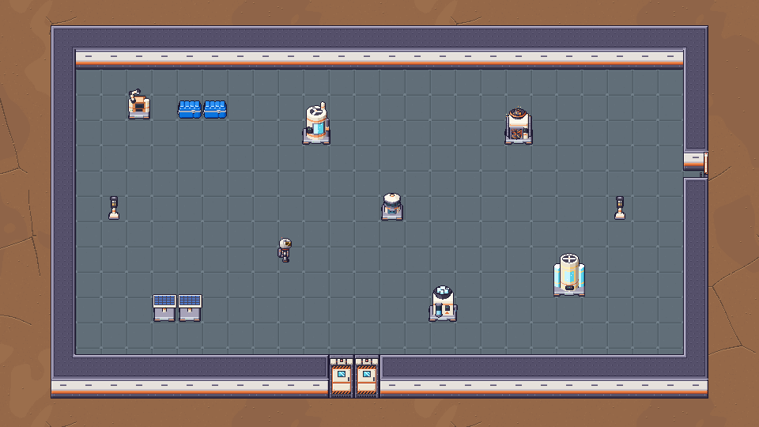
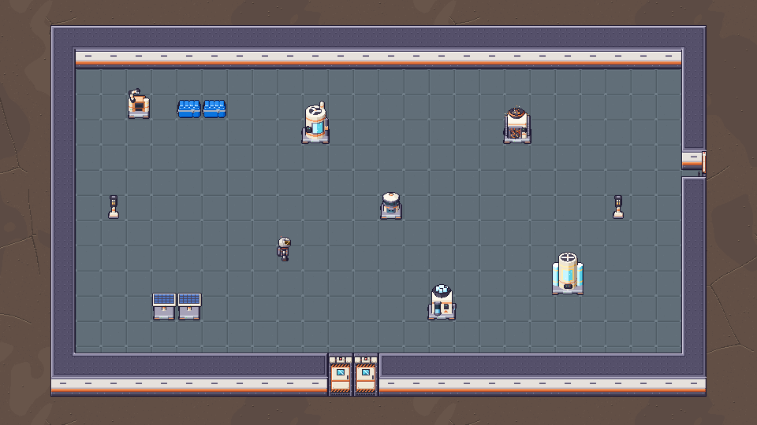
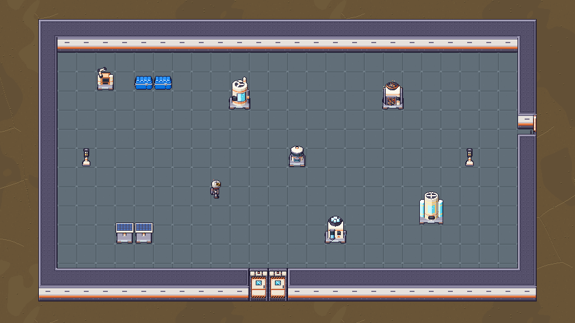
Os sprites
base_floor_0.png · 32×32base_floor_1.png · 32×32base_floor_2.png · 32×32base_floor_3.png · 32×322×2 de cada variação (×4): antes · depois
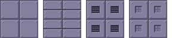
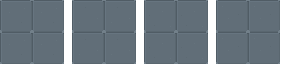
Ícone do menu
icon_base_floor.png 16×16Paleta do chão
seam#505c65shade#5a6770base#616e78wear#65737cpit#5d6a73light#677580stud#72808astud_d#4c5861Referência do dono
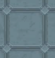
Aproveitei só o estilo: a cor (cinza-azulado com um pé no verde), o contraste baixo, a junta fina rebaixada e a ideia do pino em losango no cruzamento das juntas. O desenho é nosso: pixel art 1:1 sem gradiente, chapa de 1 tile (a referência tem chapa bem maior, com junta dupla larga e manchas suaves, que viram barulho em 32 px), luz de cima/esquerda igual à parede e às máquinas, e o desgaste reduzido a pintinhas de 1 tom.
Pro Dev integrar
- Nada muda no código. Mesmos nomes e tamanhos:
base_floor_{0..3}.png32×32 em(tx·32, ty·32), passada do chão (embaixo de tudo), sorteio de hoje (floor_variant) pode ficar como está.icon_base_floor.png16×16 igual. - Integrar = copiar
reports/design/v05_m3_chao_base/pendentes/*.pngpraassets/sprites/(depois do ok do dono). - Opcional: como as 4 são quase iguais, o
FLOOR_PICKpode virar(0,1,2,3,0,1,2,3)pra espalhar as pintinhas; não é obrigatório. - A porta tem chão dentro (a soleira dos
base_door*é ofloor_tile(0)do gerador). Se o chão novo entrar, a porta precisa ser regerada com a soleira nova, senão fica um quadrado lilás no vão. O gerador novo expõev05_m3_chao_base.floor_tile(0)e a paletaFL2(soleira:grate → FL2["seam"],light → FL2["light"]); as cenas "depois" daqui já usam uma porta regerada assim (só pra prévia, emcena_src/). Quem está refazendo a porta (v05_m3_porta) só precisa trocar a importação do chão. - Fantasma do construtor usa
base_floor_0: continua igual.
Gerado por python3 tools/sprites/v05_m3_chao_base.py (determinístico).